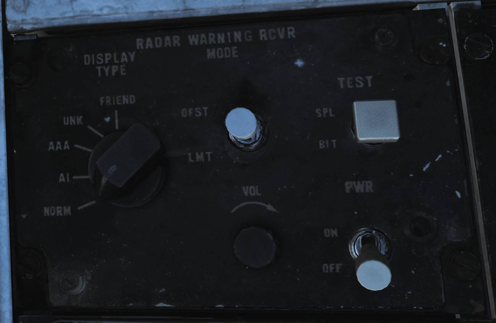
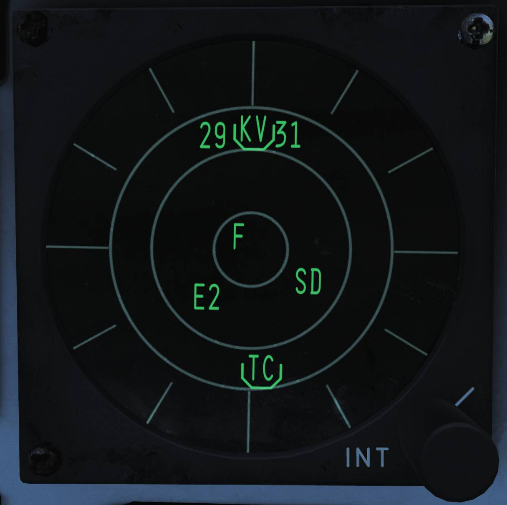
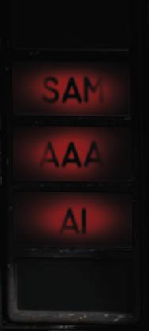
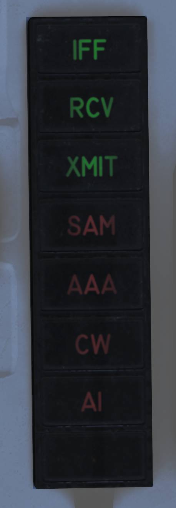

AN/ALR-67 RWR
The AN/ALR-67 radar warning receiver (RWR) is designed to inform and alert the F-14 crew about radar emitters in their general area. It’s also designed to help the crew defend themselves from hostile threats by indicate radar TRKing and engagement by radar guided weapons.
The AN/ALR-67 was integrated in the F-14 to replace the ageing AN/ALR-45 and AN/ALR-50, at first for the F-14B and later on for parts of the F-14A fleet. Until the advent of the PMDIG upgrade the AN/ALR-67 used its own stand-alone display system only. The RWR is however connected to the AN/ALQ-126 allowing it to send info on threat emitters to the jammer and also display jammed targets on its own display. It can also trigger preprogrammed countermeasure programs set up in the AN/ALE-39 system.
On later F-14B aircraft incorporating the PTID upgrade the AN/ALR-67 was also integrated into the MDIG displays system, allowing for a more detailed threat display on the ECMD.
The AN/ALR-67 on the F-14B has four small spiral high-band antennas, four wide-band high-band quadrant receivers and a low-band array. Connected to these antennas is a narrow-band superheterodyne receiver analyzing the received signals and indicating emitters and threats to both pilot and RIO using two displays, one at each seat and by audio signals played to the ICS of both
Controls

The AN/ALR-67 RWR is controlled by a control panel on the RIO right side horizontal panel.
The PWR (power) switch control power to the RWR and should be set to ON to operate the system.
The VOL (volume) control knob sets RIO audio level for the RWR sound indications. The pilot has a corresponding control on his Volume/TACAN command panel.
The TEST switch has two selectable modes and is spring-loaded to center when not held. Momentary selection of the BIT position initiates the AN/ALR-67 built in test and if the switch is held in the SPL (special) position while on the first BIT page displays the special BIT status page as long as it’s held in that position.
The MODE switch also has two selectable modes used while held in the respective position, spring-loaded to return to center when not held. When not activated enables normal operational mode, OFST enables the offset mode when held and LMT the limit mode when held. The offset mode is indicated by an O in the status ring on the display and separates overlapping threat symbols sacrificing azimuth accuracy to instead show all threats clearly. The limit mode is indicated by an L in the status ring on the display and limits the display to only show the threat symbols of the six highest prioritized threats.
The DISPLAY TYPE selector sets what threat display priority to use on the RWR displays.
- NORM - Normal is indicated by a N in the status ring on the display and shows threat symbology according to the loaded threat library.
- AI - Airborne interceptor is indicated by an I in the status ring on the display and prioritizes all airborne interceptor threats above all other threats.
- AAA - Anti-aircraft artillery is indicated by an A in the status ring on the display and prioritizes all anti-aircraft artillery threats above all other threats.
- UNK - Unknown is indicated by a U in the status ring on the display and prioritizes all unknown threats above all other threats.
- FRIEND - Friendly is indicated by an F in the status ring on the display and allows for the same prioritization as in normal but also displays known friendly emitters.
Displays

The RWR display is identical at both positions in the cockpit and uses three bands (circles) on the display to indicate the threat level of the displayed threat symbols.
- Outermost, critical band: Displays threat symbols belonging to emitters representing an imminent threat to own aircraft, either a locked-on TRKing radar or a radar detected to be actively engaging own aircraft. A threat symbol belonging to a TRK detected as actively engaging own aircraft is enhanced by flashing its symbol.
- Middle, lethal band: Displays threat symbols belonging to emitters representing threat systems deemed within lethal range of own aircraft but not actively TRKing or engaging it.
- Inner, non-lethal band: Displays threat symbols belonging to emitters not representing a system capable of engaging own aircraft or systems capable of but not deemed within range to engage it.
- System status circle: Indicates various system modes in use or the presence of failures. The upper left quadrant displays what display type is set (N, I, A, U, or F), the upper right quadrant showing an L if limited display mode is used, and the lower half indicating either the use of the offset display mode by indicating an O, the presence of a BIT failure by showing B, or that the system is thermally overloaded (too warm) by showing a T.
- Display intensity knob: On the lower right side, it controls display intensity on the display it’s attached to.
💡 The ordering of the three threat bands has changed at least once since the introduction of the AN/ALR-67, and as the modeled AN/ALR-67 represents one of the earlier versions we’ve chosen the present order.
Warning Lights
| Pilot | RIO |
|---|---|
|  |  |
The two crewmembers have warning lights dedicated to specific threats on their front cockpit panels. The pilot warning lights are situated on the right side of the HUD and the RIO warning lights on the right side of the TID. The RIO warning light panel also contains lights for the AN/ALQ-126 and the IFF transponder, those are detailed under their respective section.
The different lights illuminate to indicate the presence of a certain type of threat in the critical band of the RWR and when an active engagement is detected the corresponding light starts flashing. The categories present are SAM (surface-to-air missile), AAA (anti-air artillery), AI (airborne interceptor), and (only in the RIO pit) CW (continuous wave).
Threat Indication Alert Tones
The AN/ALR-67 uses four distinct audio tones to indicate threats and status changes of those threats.
A single short tone is used to indicate the presence of a new emitter or when a threat is moved to another threat band.
A slow warbling, alternating tone is used to indicate the presence of a threat in the critical band.
A fast warbling, alternating tone is used to indicate that a threat is actively engaging own aircraft.
A special four tone audio signal, pitch decreasing with each tone, is used to indicate a special event as programmed by the threat library. In the Heatblur DCS F-14 this represents a new threat tied to a system capable of silently engaging own aircraft, i.e. it can engage own aircraft without causing it’s threat symbol to move to the critical band and thus no additional audio warning tones. This capability is either because of that the launching aircraft is capable of launching missiles in a TWS mode or that a launching SAM system can guide missiles by other means than radar and thus not giving further warning of an active engagement.
BIT
The AN/ALR-67 BIT cycles between different test screens testing the screen, symbology and threat indication tones as well as displaying system revision and threat library information.
The first page displayed shows system and threat library revision and the following screens test the symbol generation of the displays.
The threat indication tones are also tested during the bit, first page tests the status change tone, second page the special tone, third page the threat in critical band tone and the fourth the fast warbling active threat tone.
During the tests the threat warning lights also illuminate for both the pilot and the RIO.
| Threat Symbol | Platform/Sensor | Special Tone |
|---|---|---|
| Ships | ||
| AB | Arleigh Burke class destroyer | |
| AK | Admiral Kuznetsov class aircraft carrier | |
| GR | Grisha 5 class corvette (Albatros) | |
| HP | Oliver Hazard Perry class frigate | |
| J2 | Jiangkai II class frigate (Type 054A) | |
| KK | Krivak 3 class frigate (Rezky) | |
| KV | Kirov class battlecruiser (Pyotr Velikiy) | |
| L1 | Luyang I class destroyer (Type 052B) | |
| L2 | Luyang II class destroyer (Type 052C) | |
| LC | La Combattante IIa class fast attack craft | |
| N | Ships only carrying a navigational radar (civilian ships, submarines) | |
| NE | Neustrashimy class frigate | |
| NZ | Nimitz class aircraft carrier | |
| SV | Slava class cruiser (Moscow) | |
| TC | Ticonderoga class cruiser | |
| TT | Tarantul 3 class corvette (Molniya) | |
| TW | Tarawa class amphibious assault ship | |
| YU | Yuzhao class amphibious transport dock (Type 071) | |
| Aircraft | ||
| 14 | F-14A/B | Yes |
| 15 | F-15C/E | Yes |
| 16 | F-16C | Yes |
| 17 | JF-17 | Yes |
| 18 | F/A-18C | Yes |
| 19 | MiG-19 | |
| 21 | MiG-21bis | |
| 23 | MiG-23MLD | |
| 24 | Su-24M/MR | |
| 25 | MiG-25PD | |
| 29 | Su-27, Su-33, MiG-29A/G/S, and J-11A | Yes |
| 30 | Su-30 | Yes |
| 31 | MiG-31 | |
| 34 | Su-34 | Yes |
| 37 | AJS-37 | |
| 39 | Su-25TM (Su-39) | Yes |
| 50 | A-50 | |
| 52 | B-52 | |
| AN | AN-26B and AN-30M | |
| AP | AH-64D | |
| B1 | B-1B | |
| BE | Tu-95 and Tu-142M | |
| BF | Tu-22M3 | |
| BJ | Tu-160 | |
| E2 | E-2D | |
| E3 | E-3C | |
| F4 | F-4E | |
| F5 | F-5E | |
| HX | Ka-27 | |
| IL | IL-76MD and IL-78M | |
| KC | KC-135 | |
| KJ | KJ-2000 | |
| M2 | Mirage 2000-C and 2000-5 | Yes |
| S3 | S-3B | |
| SH | SH-60B | |
| TO | Tornado | |
| TR | C-130 and C-17A | |
| Air Defense | ||
| 2 | SA-2 Guideline Fan Song track radar (S-75) | |
| 3 | SA-3 Goa Low Blow track radar (S-125) | |
| 5 | SA-5 Gammon Square Pair track radar | |
| 6 | SA-6 Gainful Straight Flush track radar (Kub) | |
| 7 | HQ-7 track radar | |
| 8 | SA-8 Gecko search and track radar (Osa) | |
| 10 | SA-10 Grumble Flap Lid track radar (S-300PS 30N6) | |
| 11 | SA-11 Gadfly Fire Dome track radar (Buk) | |
| 15 | SA-15 Gauntlet Scrum Half search and track radar (Tor 9A331) | |
| 19 | SA-19 Grison Hot Shot search and track radar (Tunguska 2C6M) | Yes |
| A | Gepard, M163 Vulcan, and ZSU-23-4 Shilka track radars | |
| BB | SA-10 Grumble Big Bird search radar (S-300PS 64H6E) | |
| BF | Rapier Blindfire track radar | |
| CS | SA-10 Grumble Clam Shell search radar (S-300PS 5N66M) | |
| DE | Sborka (Dog Ear) search radar | |
| FF | SA-2, SA-3, and SA-5 Flat Face search radar (S-125 P-19) | |
| GR | Roland MPDR-3002 S search radar | |
| HA | Hawk AN/MPQ-50 and AN/MPQ-55 search radars | |
| HK | Hawk AN/MPQ-46 track radar | |
| HQ | HQ-7 search radar | |
| NS | NASAMS AN/MPQ-64 Sentinel search radar | Yes |
| PT | Patriot AN/MPQ-53 search radar | |
| RO | Roland MPDR-16 search radar and Domino 30 track radar | |
| RP | Rapier Dagger search radar | |
| S | 1L13 and 55G6 early warning search radars | |
| SD | SA-11 Gadfly Snow Drift search radar (Buk) | |
| TS | SA-5 Gammon Tin Shield search radar | |
| Missiles | ||
| M | AIM-54, AIM-120, MICA-EM, R-37, R-77, and SD-10 | |
| ATC (Air Traffic Control) | ||
| T | Airport ATC Radar |
💡 Aircraft only flown by own faction in a mission are automatically set as friendly and shown only when setting the DISPLAY TYPE selector to FRIEND. N are shown only in UNK and T only in FRIEND.
Ships symbology is enhanced by being enclosed by an enlarged U symbol.